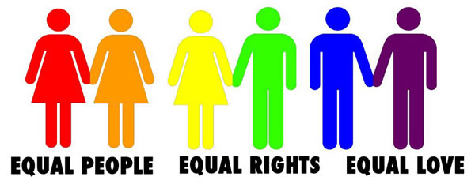
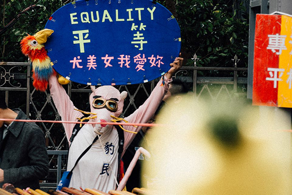
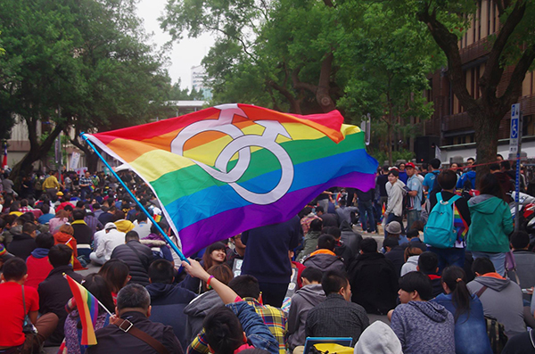
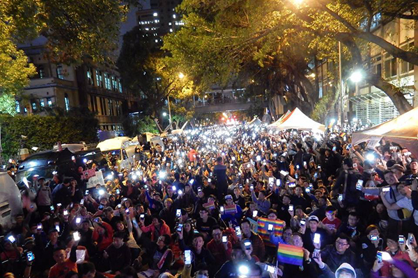
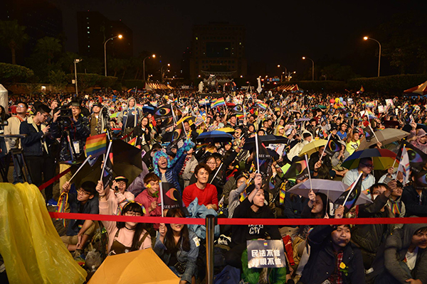
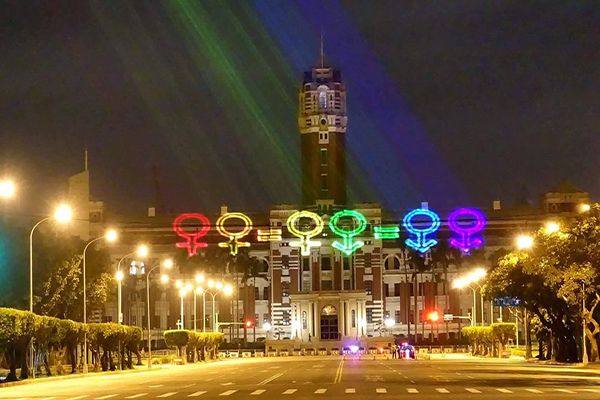
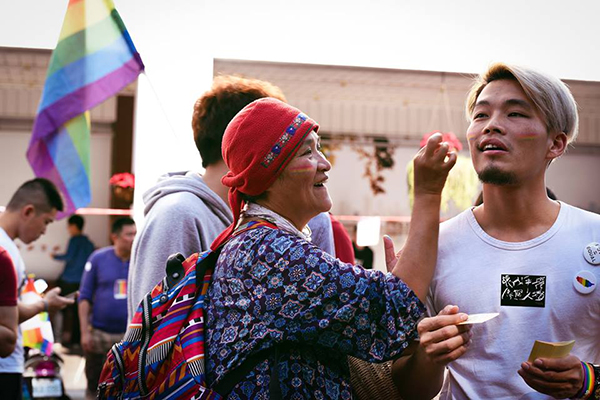
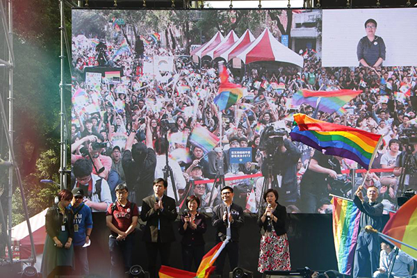
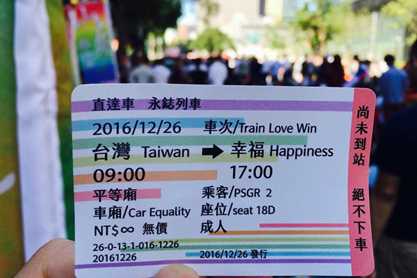

LGBT
LGBT是英文女同性戀者（Lesbians）、男同性戀者（Gays）、雙性戀者（Bisexuals）與跨性別者（Transgender）的首字母縮略字。
1990年代，由於「同性戀社群」一詞無法完整體現相關群體，「LGBT」一詞便應運而生、並逐漸普及。

同志遊行
臺灣同志遊行（Taiwan LGBT Pride）是在臺灣臺北市舉辦的同志遊行，於每年十月底舉行，吸引全臺各地及鄰近國家的同志團體、社會運動者參與，主要目的為提供一個公開現身的平台，凝聚志同道合者的力量喚起社會大眾注意，讓隱藏的問題曝光、未見的需求被重視，進而建立更多元包容的社會及價值。
相挺為平權，全民撐同志
婚姻是為基本人權，在民主社會中不應因為性別、種族、信仰、殘疾...而有所差異。
國民黨、法務部試圖在公聽會中所研議的【同志伴侶法】，
如同【種族隔離政策】將同志族群刻意劃分於外，
在民主自由的台灣，我們竟然堂而皇之的歧視，
甚至想走民主回頭路，制定如同黑人隔離政策的【同志專法】?
同志無須「保障」，同志要的是基本的尊重與平等權利。
等權利。
#相挺為平權，全民撐同志
11/28
相挺為平權，全民撐同志
11月28日，由尤美女委員所召開的婚姻平權公聽會，邀請所有自詡為民主社會的公民朋友站出來，一起關心公聽會的進度與發展。
沒有過多的經費動員，透過堅定地推動我們所信仰的民主價值。短短兩天透過網路緊急動員，來自台灣各地聚集三萬人塞爆立法院青島東路側，以實際行動告訴政府：
人權無法退讓，同志不是二等公民。



12/10
讓生命不再逝去 為婚姻平權站出來
「讓生命不再逝去 為婚姻平權站出來」音樂會12/10下午在凱道舉辦，下午5時多，凱道飄起綿綿細雨，不減民眾熱情。周圍的捷運站、國家圖書館、中正紀念堂都擠滿人潮，
主辦單位估計到場人次超過25萬人，已是台灣史上最多人參與的同志運動。


12/26
爭取婚姻平權 用愛守護立院
立法院審查4個婚姻平權相關法案，尤美女版民法修正案成為台灣史上首度通過初審的同性婚法案。
沒有站在進步一方的所有委員，及到場的三萬五千名夥伴，我們不會走到今日。
然而戰役尚未結束，接下來將交付黨團協商，仍需要眾人的監督，也請各位持續支持友善的立委，這些日子以來他們承擔許多壓力和不理智的叫囂。
12/26是台灣歷史上非常重要的一刻，只要我們堅定、理性表達我們的訴求，我們相信這個社會可以理解，同志們要的並非特權，而是平等。


